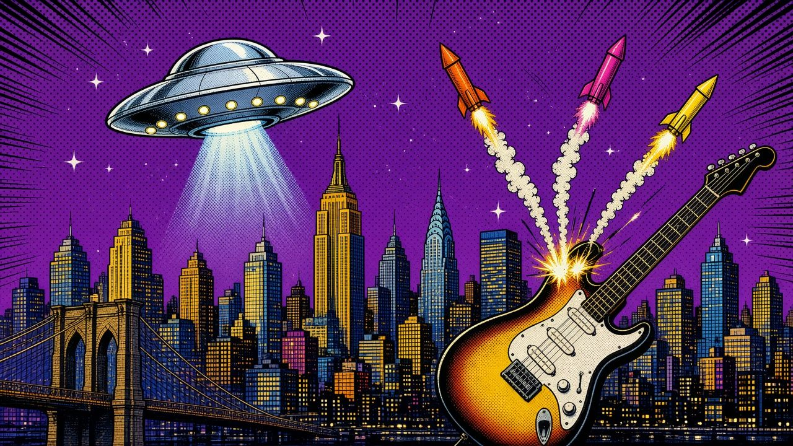

The Rack
Grab an issue. New ones land as the research checks out.

A fan-made comic series
The wildest true stories of rock’s Spaceman, one issue at a time. Every tale sourced. Every panel drawn without a single face.
Browse the rack ↓Grab an issue. New ones land as the research checks out.